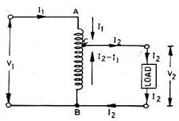

An auto transformer is a special type of electrical transformer with only one winding on an iron core. In auto transformer, one single winding is used as primary winding as well as secondary winding. A diagram of a step up autotransformer is shown:

The winding ab of total turns N1 is considered as primary winding.
This winding is tapped from point c and the portion bc is considered as secondary. Let’s assume that the number of turns in between points B and C is N2. If V1 voltage is applied across the primary winding i.e. in between A and B. So voltage per turn in this winding is V1 / N1
Hence, the voltage across the portion bc that is the secondary, will be V1N2 /N1 and this voltage is V2.
Hence, V1N2 / N1 = V2
⇒ V2 / V1 = N2 / N1 = Constant = k
As BC portion of the winding is considered as secondary, it can easily be understood that value of constant k is nothing but turns ratio or the voltage ratio of that autotransformer.
Uses of an autotransformer
- Power distribution : Auto transformers are frequently used in power applications to interconnect systems operating at different voltage levels, such as to 66 kV to 138 kV transmission line.
- Another use of auto transformer is in industry to adapt machinery built for 480 V supplies to operate on a 600 V supply.
- Auto transformers are also used for providing conversions in between the two common main voltage bands in the area
(suppose 100 to 130 and 200 to 250). - In long power distribution lines, special auto transformers equipped with automatic tap-changer are inserted as voltage regulators. Thus, customers at the far voltage source.
- A special type of auto transformer is used to provide grounding on three-phase systems.
- Tapped auto transformers are frequently used to match impedance, eg: they are inserted in between a low-impedance microphone and a high-impedance amplifier input.
 by
by